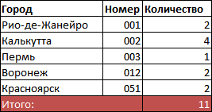

Список в типографике — способ оформления различного рода перечислений или перечней. Каждый элемент списка начинается с маркера списка или номера-буквы и весь текст списка не должен выступать влево за них.
Антон Варнавский, Нетология
Антон Варнавский BRAIN IT
Team Lead в Brain IT
Список в типографике — способ оформления различного рода перечислений или перечней. Каждый элемент списка начинается с маркера списка или номера-буквы и весь текст списка не должен выступать влево за них.
Списки могут быть:
Разница между ними в смысловой нагрузке. Правильно подбирайте список исходя из контента.
Если в списке важна последовательность действий, например расписание занятий на день, то вам подойдут нумерованные списки.
Если нужно перечислить несколько пунктов без четкой их последовательности, например, список покупок, то можно выбрать маркированный список.
В случае, когда требуется оформить несколько определений и дать им описание, подойдет список описаний.
У списков есть стили по умолчанию. Визуально текст отбивается пустой строкой до начала и пустой строкой после окончания. Поэтому в тексте он выделяется.
Все пункты списка визуально немного смещены относительно левого края всего остального текста, и перед каждым пунктом появляется либо маркер (по умолчанию черная точка), либо номер. Это привлекает внимание читателя к тексту и повышает его читабельность.
Во всех видах списков общим является то, что вложить внутрь родительского тега можно только теги пунктов списка.
Внутрь тегов пунктов списка уже можно вкладывать какие угодно теги, в том числе и другие списки.
Хорошо
Плохо
Ненумерованный список
ul — родительский тег. Все списки начинаются с него. Это парный тег.
UL = Unordered List — неупорядоченный список.
li — тег пункта списка. Парный тег.
LI = List Item — элемент списка.
Представим ситуацию: нам на странице нужно перечислить список продуктов, которые понадобятся, чтобы приготовить пиццу.
<ul><li></li></ul>В итоге разметка для нашего списка покупок будет выглядеть так:
Каждый продукт размещен между <li> и </li> и является отдельным пунктом списка.
Нумерованный список
ol — родительский тег. Парный тег.
OL = Ordered List — упорядоченный список.
li — тег пункта списка.
Продолжим писать контент для страницы о приготовлении пиццы. Теперь нам нужно оформить рецепт приготовления. Очевидно, что тут нам тоже пригодится список.
<ol><li></li></ol>Значит, наша разметка будет выглядеть следующим образом:
В этом типе списков структура чуть сложнее, чем у предыдущих. Здесь используются три тега: родительский, тег термина и тег определения.
dl — родительский парный тег.
DL = Description List — список описаний.
dt — тег, в который заключается термин, парный.
DT = Definition Term — термин.
dd — тег, в котором размещается определение для термина.
DD = Description — описание.
Теперь мы хотим разобраться с видами пиццы и начинок для нее. У пиццы есть общепринятые названия, нам нужно дать расшифровку каждого.
Для этого отлично подойдет список описаний.
<dl><dt></dt><dd></dd></dl>В нужном месте текста мы обозначаем, что здесь будет список. Открываем тег <dl>.
Далее нам нужно написать название пиццы. Для этого используем тег термина и помещаем внутрь наше слово.
Вот так <dt>Пепперони</dt>.
После мы даем расшифровку этого термина и пишем внутри тега dd.
Вернемся к нашему списку действий в рецепте приготовления. Важно отметить, что начинка должна быть уже готовой к употреблению.
Мы понимаем, что нам нужно разорвать список, вставить текст, а потом снова продолжить список.
Если мы просто разорвем список, а потом откроем новый, то второй список снова начнется с единицы. Что же делать?
Нужно начать нумерованный список не с единицы. На этот случай вы можете использовать html-атрибут start.
В качестве значения атрибута указываем число, с которого нужно начать этот конкретный список.
Отдельно стоит остановится на списках, состоящих из нескольких уровней.
В процессе создания многоуровнего списка стоит помнить о правиле, что в списке могут быть только пункты списка.
Это значит, что второй и все следующие уровни списка нужно поместить внутрь пункта предыдущего списка.
Вы можете комбинировать нумерованные и маркированные списки при вложении.
Давайте приведем примеры начинок, чтобы не растеряться в магазине. Мы понимаем, что нам нужно поместить список в список. Ингредиенты можно брать в любом порядке, поэтому можно отразить их при помощи маркированного списка.
Чтобы создать второй уровень списка, ещё один список вкладывается внутрь пункта первого списка.
Нужно подсчитать, сколько денег было потрачено на приготовление пиццы. На странице должны быть следующие данные: название продукта, страна производитель, стоимость.
Список подойдет?

Мы понимаем, что списком такую информацию не оформишь, будет очень неудобно, например, считать итоговую сумму.
Лучше всего для этих целей подойдет таблица:
Таблица всегда состоит из строк и ячеек в строке.
В нужном месте страницы мы создаем таблицу при помощи парного родительского тега table.
Затем внутрь таблицы помещается необходимое количество строк при помощи парного тега tr. TR расшифровывается как table row — срока таблицы.
В каждой строке может лежать любое (нужное вам) количество ячеек.
Ячейки бывают двух типов:
th — для заголовков колонки. TH — table header cell — ячейка «шапки» таблицы. Текст в такой ячейке отображается жирным шрифтомtd — для всех остальных ячеек. TD — table data cells — ячейка данных таблицы.Сколько ячеек вы разместите в ряду, столько колонок у вас получится. Важно помещать одинаковое количество ячеек в каждую строку для правильного внешнего вида таблицы и состыковки данных по вертикали
и горизонтали.
Давайте разместим данные в таблице. Всего из магазина мы принесли 6 различных продуктов.
<table>
<tr></tr>
<td></td>
</table>
Открываем таблицу при помощи родительского тега table и размещаем внутри 6 строк — тегов tr. Внутри строк ничего писать не нужно. Все данные будут лежать в ячейках, находящихся в строке.
В каждой строке нам нужно создать 3 ячейки — с названием продукта, страной, стоимостью.
Результат: Живой пример 1
И наконец, заполним таблицу данными.
Результат: Живой пример 2
Мы внесли данные в таблицу. Но через неделю нам уже не вспомнить, что за цифра в последней колонке — масса это или цена? Нужно подписать колонки и обозначить, что за данные в каждой из них находятся.
Чтобы создать строку с заголовками колонок и отделить эту строку от основных данных таблицы, используется парный тег thead — table head.
tablethead все как обычно: строка tr и в ней ячейки tdДавайте зададим заголовки нашим колонкам.
Результат: Живой пример 3
После thead должен идти основной контент таблицы. Его так же группируют по смыслу, для этого используется парный тег tbody — table body.
Тел таблицы может быть много. Например, мы можем разбить продукты по магазинам, где они были куплены.
Результат: Живой пример 4
Теперь нам нужно подвести итог и посчитать, сколько всего было потрачено денег.

Давайте подсчитаем и выведем общую сумму.
Результат: Живой пример 5 (no-colspan)
Мы видим, что в строках с названиями магазинов у нас есть пустые ячейки. Та же ситуация в последней строке ИТОГО.
Почему бы не объединить пустые ячейки? Так таблица станет более читаемой.
span дословно переводится как «охват». Работает примерно так же, как кнопка  в Excel.
в Excel.
Если мы укажем у тега td атрибут colspan и в значении напишем 3, то ячейка растянется и охватит собою место под 3 ячейки.
Важно!
colspan и rowspan указываются для тега ячейки tdcolspanДавайте объединим пустые ячейки в строках с названиями магазинов и в последней стороке с итоговой суммой.
Результат: Живой пример 5
Поскольку все купленные на рынке продукты приехали к нам из Казахстана, то мы можем объединить обе ячейки в одну по высоте. Для этого используется атрибут rowspan.
Результат: Живой пример 6
Как вы, возможно, заметили, в строках не хватает ячеек. Причина в том, что для охвата нужно будет освободить место.
По факту атрибуты не склеивают ячейки по ширине или высоте. Они растягивают одну ячейку на указанное количество строк или колонок. Соответственно, для того чтобы таблица не развалилась, нужно освободить место под это растягивание.
Ура! Мы отлично справились с контентом на странице о приготовлении пиццы. А также выучили три вида списков и таблицы.
Мы умеем:
Задавайте вопросы и напишите отзыв о лекции!
Антон Варнавский